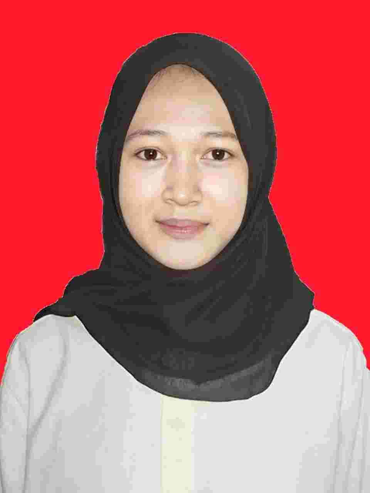

NIM 202432110 - Sistem Informasi
Saya adalah mahasiswa Sistem Informasi yang sedang mempelajari pengembangan website menggunakan HTML, CSS, JavaScript dan PHP. Saya tertarik pada bidang UI/UX Design serta pengembangan aplikasi berbasis web.